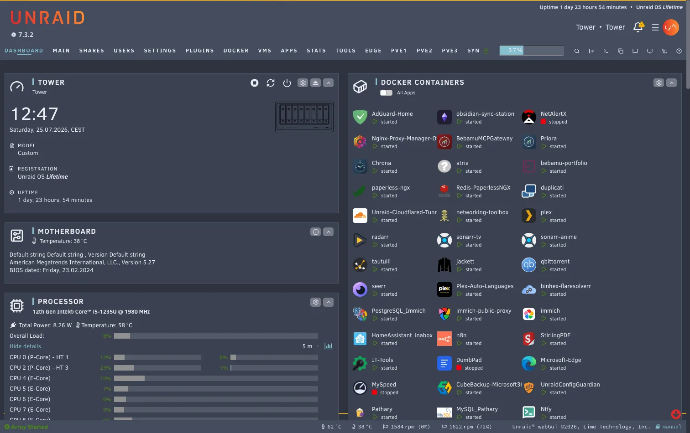
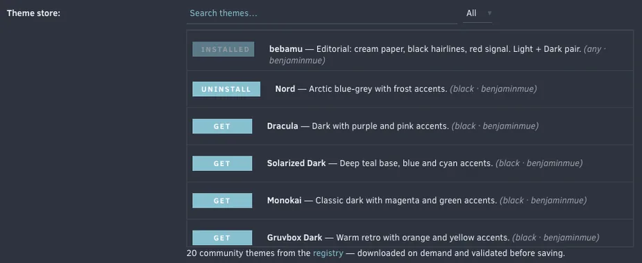
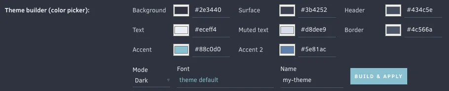
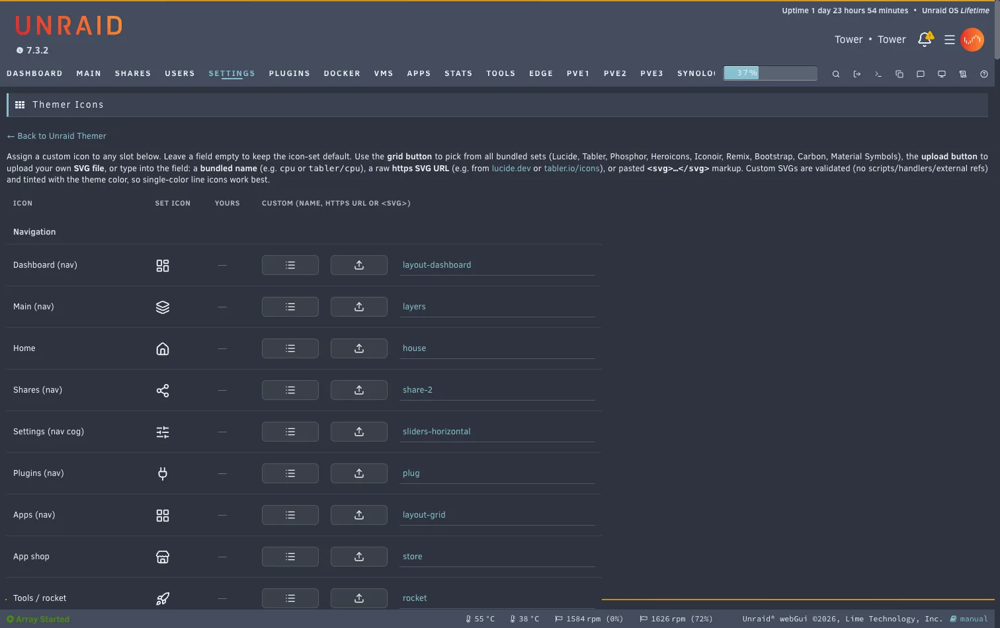
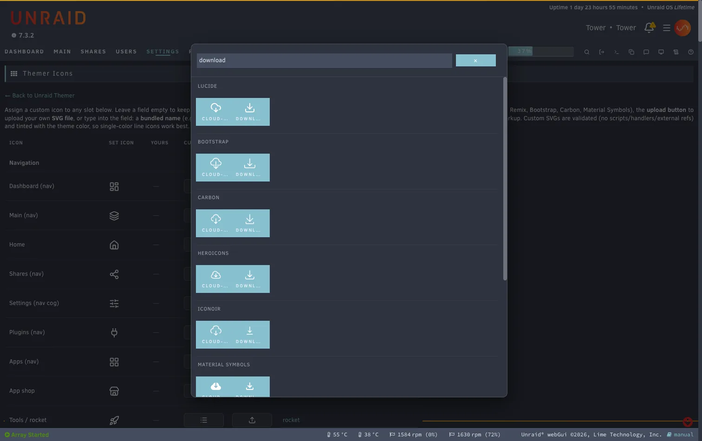

Beta Plugin for Unraid 7
Restyle the Unraid 7 webGUI.
Pick a theme or build your own, flip it on, and the whole interface restyles: the classic Dynamix pages and the new Vue web components. Swap the UI icons for open-source icon sets, or override single icons.

Themes
Twenty themes in the store. Or your own.
Bundled presets plus a built-in theme store you browse and download from on demand, with search and a light/dark filter. Every theme is validated before it is saved. On Apply the plugin pairs the Dynamix base: dark themes switch to Black or Gray, light themes to White or Azure, so the Vue components and Community Apps render in the right mode.
-
bebamu Light + Dark
Editorial: cream paper, black hairlines, red signal. Light + Dark pair.
-
Nord Dark
Arctic blue-grey with frost accents.
-
Dracula Dark
Dark with purple and pink accents.
-
Solarized Dark Dark
Deep teal base, blue and cyan accents.
-
Monokai Dark
Classic dark with magenta and green accents.
-
Gruvbox Dark Dark
Warm retro with orange and yellow accents.
-
Tokyo Night Dark
Deep night blue with blue and purple accents.
-
Catppuccin Mocha Dark
Soft dark pastel with mauve and blue accents.
-
Catppuccin Latte Light
Soft light pastel with mauve and blue accents.
-
Solarized Light Light
Warm paper base with blue and cyan accents.
-
Rose Pine Dawn Light
Soft rosy light with iris and rose accents.
-
GitHub Light Light
Clean white with blue and green accents.
-
Everforest Dark
Warm forest green with soft retro contrast.
-
Kanagawa Dark
Muted ink-wash blues inspired by Hokusai.
-
One Dark Dark
Atom's classic, balanced dark.
-
Ayu Mirage Dark
Soft mirage blues with a warm amber accent.
-
Synthwave 84 Dark
Neon '84 sunset: hot pink and electric cyan.
-
Matrix Dark
Green-on-black terminal. Wake up.
-
Unraid Appreciation Dark
A love letter to Lime Tech: Unraid orange to red on coal.
-
Amberloom Dark
Warm slate with amber and teal.
Palettes as listed in the theme registry, themes/index.json: background, surface, text, accent, accent 2. The plugin shows the same strip next to every theme in the store and the preset dropdown.

Theme builder
Eight colors and an optional font.
Build a theme from eight colors, by swatch or as hex/rgb, previewed live and saved as a preset. A live WCAG contrast readout covers the pairs that carry text, and the button label color is chosen for you so it stays readable on any accent. Optional bundled webfonts, served locally: Inter, Roboto, Source Sans 3, JetBrains Mono, Nunito, Comic Neue.

Want it in the store? See THEMES.md and the annotated themes/_template.css, then open a pull request. A GitHub Action validates every theme before it can be listed.
Icons
Nine open-source icon sets.
One switch swaps every UI glyph for a line set that tints with the theme. For finer control, the Themer Icons page lists every slot with a live preview: pick from a searchable grid of all bundled sets, paste an SVG URL, or upload your own SVG. Everything is validated, and a single icon resets to the set default with one click.
Rendered from the SVG files that ship with the plugin. Lucide (ISC); Tabler, Phosphor, Heroicons, Iconoir, Bootstrap Icons (MIT); Remix Icon, Carbon, Material Symbols (Apache-2.0).


Also in the box
The rest of the interface, too.
- Whole-UI coverage
- Classic Dynamix pages, the Vue header (bell, menu, toolbar), Community Apps, tables, dashboard and the Settings icons.
- Background image
- By URL (cached locally, CSP-safe) or a file on the server through Unraid's file picker, with a dim slider for legibility.
- Custom logo
- Replace the Unraid wordmark in the header with your own logo, by URL or a file on the server.
- Sidebar layouts
- Azure and Gray are supported; the base pairing keeps you in your layout family.
- Non-destructive
- Disable it and the webGUI is 100% stock. Semantic status colors such as disk health and array state are deliberately left untouched.
- Self-contained
- One
.plg, no external runtime dependencies. Config lives on the flash drive and survives reboots.
Install
Three steps, then a hard reload.
-
Community Applications
Open the Apps tab on your server, search for Unraid Themer and install it.
-
Or install by URL
Plugins → Install Plugin, paste:
https://github.com/benjaminmue/unraid-themer/raw/refs/heads/main/unraid-themer.plg -
Turn it on
Open Settings → Utilities → Unraid Themer, set Enable to Yes, pick a theme, Apply, then hard-reload the browser (Cmd/Ctrl+Shift+R).
Beta channel
New features land on the beta branch first. The branch a .plg is built from is its update channel, so an installed beta keeps updating from beta and never crosses over to stable. Install it the same way; it replaces the stable build in place. Your settings live on the flash drive and survive the switch in both directions. Beta versions carry a bNN suffix.
https://github.com/benjaminmue/unraid-themer/raw/refs/heads/beta/unraid-themer.plgThis is a beta. Testing and contributions are very welcome. Found a glitch or have an idea? Open an issue or start a discussion.
How it works
Unraid 7 has no global CSS hook, but a .page with Menu="Buttons" runs inside <head> on every page. Unraid Themer uses that to inject the active theme, icon set and your overrides, only when enabled. Themes restyle through :root custom-property overrides, which inherit through the open shadow DOM of the Vue web components, so the new UI recolors too.
Built with AI
The plugin was written largely by an AI assistant (Claude Code by Anthropic), directed, reviewed and tested on real hardware by @benjaminmue on his own Unraid 7.3 server. Read the code before trusting it on yours; issues and pull requests are welcome.
Inspired by WuSiYu/unraid-custom-css (the injection mechanism) and Skitals/unraid-theme-engine (the discontinued Theme Engine).